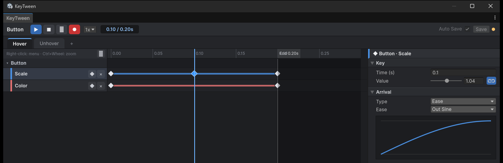

녹화
녹화를 켜면 Scene 뷰나 Inspector에서 오브젝트를 바꾸는 것만으로 키를 만들 수 있습니다. Unity Animation 창의 녹화와 같은 방식입니다.
녹화하기
- 상단 바의 ● 버튼을 켭니다. 버튼이 빨갛게 바뀝니다.
- 재생 막대를 원하는 시간에 둡니다.
- Scene 뷰나 Inspector에서 오브젝트를 바꿉니다. 그 값이 키가 됩니다.
오브젝트 자체는 바꾸기 전 값으로 돌아가고, 화면에는 미리보기로 새 키가 반영된 모습이 보입니다. 변경 한 번이 Undo 한 번입니다.

녹화로 키가 생기는 방식
| 경우 | 결과 |
|---|---|
| 트랙이 있는 속성 | 재생 막대 위치에 키를 넣습니다. 그 시간에 이미 키가 있으면 값만 바꿉니다 |
| 트랙이 없는 속성 | 트랙을 새로 만들고, 0초 키(바꾸기 전 값)와 재생 막대 위치의 키(바꾼 값)를 넣습니다 |
- Relative To Rest나 Size Relative 트랙에는 그 기준에 맞춘 값을 넣습니다.
- 0초에서 녹화하면 첫 키가 그 값을 쓰도록 Start가 Key Value로 바뀝니다.
녹화되는 속성
바꾼 필드는 그 값을 쓰는 트랙으로 녹화됩니다. 아래 "녹화되지 않는 것"을 뺀 트랙은 모두 녹화됩니다(Transform, UI, TextMeshPro, SpriteRenderer, Light, Camera, AudioSource, UIEffect).
- 상태에 그 값을 쓰는 트랙이 이미 있으면 그 트랙에 키가 들어갑니다. 예를 들어 World Position 트랙이 있으면 오브젝트를 옮긴 것이 World Position으로, Offset Min 트랙이 있으면 Position·Size를 바꾼 것이 Offset Min으로, Scroll Position 트랙이 있으면 Content를 움직인 것이 Scroll Position으로 녹화됩니다.
- 그런 트랙이 없으면 그 필드의 기본 트랙이 새로 생깁니다. 위치는 Position, 색은 Color 트랙입니다.
- Color에서 알파만 바꿨고 같은 Graphic에 Alpha 트랙만 있으면(Color 트랙은 없으면) Alpha로 녹화됩니다. Alpha 트랙만 있을 때 R·G·B를 바꾸면 Color 트랙이 생깁니다.
- Number 트랙이 있으면 텍스트 속 숫자를 바꾼 것이 Number로 녹화됩니다. 텍스트를 바꿔도 Number 트랙이 새로 생기지는 않습니다.
녹화되지 않는 것
- 재질 값: Material 트랙과 TextMeshPro의 Outline Width, Outline Color, Face Dilate, Underlay Color. 재질 에셋을 바꾸는 것이라 오브젝트의 필드가 바뀌지 않습니다.
- Reveal과 글자별 트랙
- 직렬화 필드를 알려 주지 않은 커스텀 트랙. 자세한 내용은 커스텀 트랙 만들기를 참고하세요.
- Start가 Pointer인 트랙
- 창에서 편집 중인
KeyTween밖의 오브젝트
녹화한 키 저장하기
녹화한 키도 Auto Save와 Save로 저장됩니다. Play 중에도 녹화할 수 있으며, 실행 중 복사본에서 녹화한 키는 원본 Prefab에 남습니다.